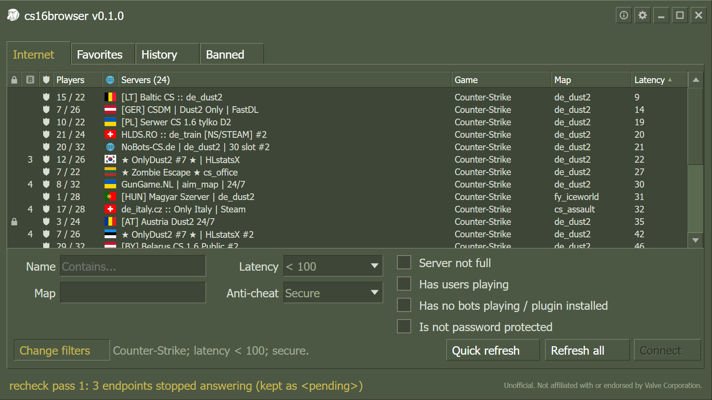

Feels like the original
Familiar GoldSrc tabs and olive green chrome, with country flags beside server names. Flags use the server's AMX Mod X language when available, then an offline IP lookup.
FREE · OPEN SOURCE · FOR WINDOWS
Steam's Counter-Strike 1.6 list is flooded with fake and redirect servers. cs16browser checks every server before showing it, so the list only has servers you can actually play on.

01 / THE PROBLEM
A few redirect farms have registered tens of thousands of made-up servers with Steam. The in-game browser shows whatever Steam sends it, so the few hundred real servers get buried. Pick the wrong entry and you can end up on a server you never chose.
Before a server appears, the app queries it directly. The name, map and player count you see come from the server itself, not from what it told Steam.
Redirects to another address, server farms, impossible player counts and copies of other servers' names are dropped. They don't flash up while the list loads either.
The Banned tab shows flagged servers and endpoints the scan could not verify. Right-click a row to whitelist one server, or clear all saved bans. You can also ban a server from Internet, Favorites or History.
02 / FEATURES
Keeping fakes out is the main job. The rest makes it pleasant to use every day.
Familiar GoldSrc tabs and olive green chrome, with country flags beside server names. Flags use the server's AMX Mod X language when available, then an offline IP lookup.
Open a server's info to see its players with their scores and time on the server, so you can tell a busy match from a quiet one before you join.
Filter by name, map, ping, anti-cheat, bots (including ones a bot plugin reports as players), full or empty servers and passwords. The list updates as you type.
Right-click a server to keep it in Favorites. Every server you join lands in History, so last night's game is easy to find again.
Move with the arrow keys, then press Enter or double-click. Steam starts the game and connects you.
When a new version is out, the app offers to install it and waits for your OK. Updates are signed, so only builds from this project get installed.
03 / FAQ
Steam only gives out the full server list through its Web API, and that requires a key. Getting one is free and takes a minute: sign in on Steam's API key page, enter any domain name (localhost is fine) and copy the key. Steam doesn't give keys to limited accounts.
Your key, favorites, history and settings are stored on your PC. The key is sent only to Steam, to fetch the server list. The app then contacts each game server to check it, and GitHub to look for updates. You can turn the update check off in Settings. There's no account and no tracking.
You can browse without it. To join a server you need Steam and Counter-Strike 1.6 in your library, because joining goes through Steam, just like it does from the game's own browser.
The installer isn't signed with a paid code-signing certificate yet, so SmartScreen doesn't recognize it. Click More info, then Run anyway. The source code is public, and GitHub builds every release straight from it.
No. If a server answered in the last minute, the app reuses that answer. No server gets more than three queries a minute, and servers that keep timing out are left alone for a while.
Yes. It's open source under the GPL-3.0 license, with no ads and no sign-up.
04 / DOWNLOAD
Prefer to build it yourself? The source code and build steps are on GitHub.
If Windows shows a SmartScreen warning, here's why.
It's free from Steam's API key page.
Settings opens the first time you start the app. Save the key and the server list starts filling in.